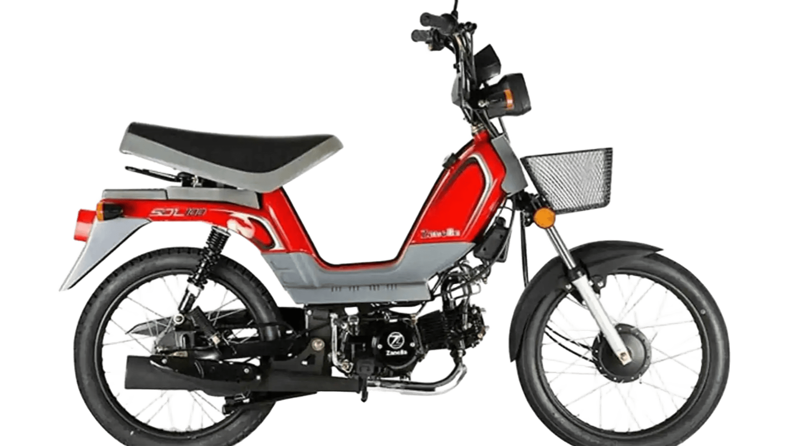
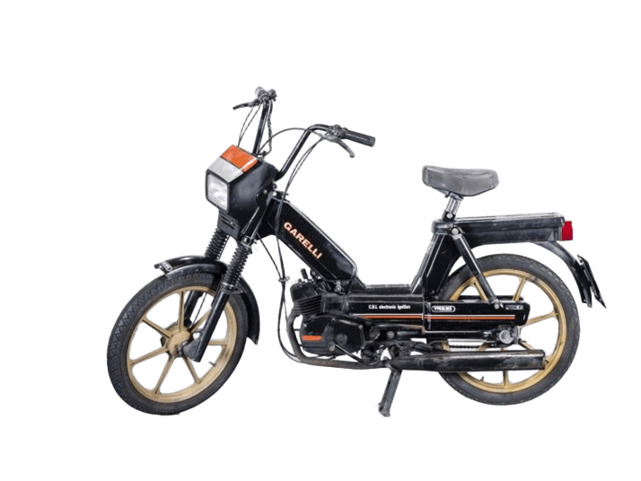
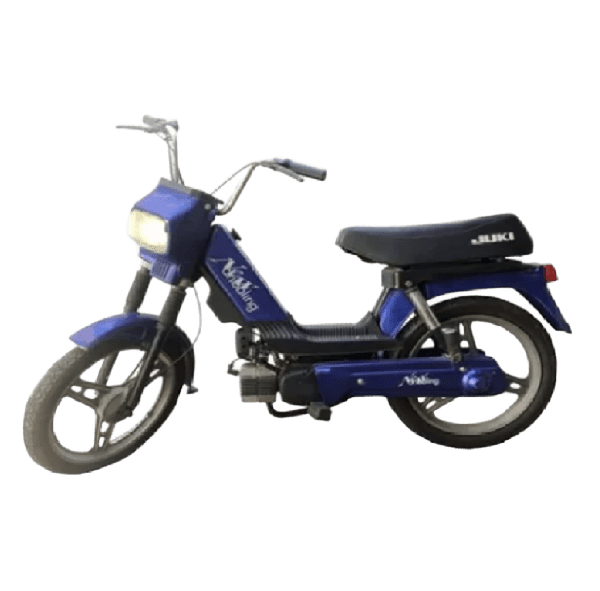
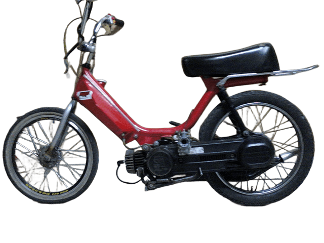

Historia del Ciclomotor
Que es el ciclomotor?
El ciclomotor es un vehículo ligero que comenzó a popularizarse en la década de 1950 como una alternativa económica y accesible para el transporte personal. Equipados con motores de 50cc y generalmente con transmisión automática o semiautomática, los ciclomotores ofrecían una solución ideal para desplazamientos urbanos.
Evolución del Ciclomotor en Argentina
En Argentina, los ciclomotores tuvieron su auge en los años 70 y 80, cuando se convirtieron en el principal medio de movilidad para trabajadores y jóvenes. Marcas nacionales como Zanella y Juki comenzaron a producir modelos accesibles y resistentes, adaptados a las necesidades del público argentino.
Modelos Icónicos




Impacto Cultural
Más allá de ser un simple medio de transporte, los ciclomotores se convirtieron en un ícono de la juventud y la cultura urbana. Con el tiempo, surgieron comunidades y clubes dedicados a la modificación y personalización de estos vehículos, impulsando el fenómeno de las "picadas" y competencias informales.
Regulaciones y Cambios en la Industria
A medida que avanzaban las normativas de seguridad y emisiones, la producción de ciclomotores 2T fue disminuyendo. Esto llevó a la introducción de motores 4T en algunos modelos y al crecimiento de motocicletas de mayor cilindrada en el mercado.